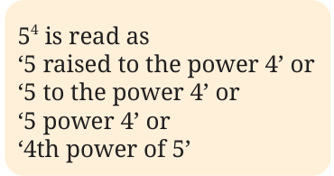
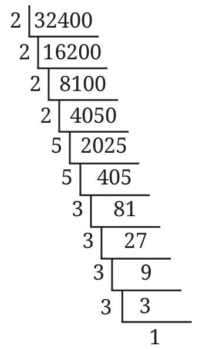
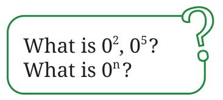

The initial thickness of the paper was 0.001 cm.
Upon folding once, its thickness became \(0.001 \text{ cm} \times 2 = 0.002\) cm.
Folding it twice, its thickness became —
\(0.001 \text{ cm} \times 2 \times 2 = 0.004\) cm, or \(0.001 \text{ cm} \times 2^2 = 0.004\) cm (in shorthand).
Upon folding it thrice, its thickness became —
\(0.001 \text{ cm} \times 2 \times 2 \times 2\), or \(0.001 \text{ cm} \times 2^3 = 0.008\) cm.
When folded four times, its thickness became —
\(0.001 \text{ cm} \times 2 \times 2 \times 2 \times 2\), or \(0.001 \text{ cm} \times 2^4 = 0.016\) cm.
Similarly, the expression for the thickness of the paper when folded 7 times will be \(0.001 \text{ cm} \times 2 \times 2 \times 2 \times 2 \times 2 \times 2 \times 2\), or \(0.001 \text{ cm} \times 2^7 = 0.128\) cm.
We have seen that square numbers can be expressed as \(n^2\) and cube numbers as \(n^3\).
\(n \times n = n^2\) (read as ‘n squared’ or ‘n raised to the power 2’)
\(n \times n \times n = n^3\) (read as ‘n cubed’ or ‘n raised to the power 3’)
\(n \times n \times n \times n = n^4\) (read as ‘n raised to the power 4’ or ‘the 4th power of n’)
\(n \times n \times n \times n \times n \times n \times n = n^7\) (read as ‘n raised to the power 7’ or ‘the 7th power of n’) and so on.
In general, we write \(n^a\) to denote n multiplied by itself a times.
\(5^4 = 5 \times 5 \times 5 \times 5 = 625\).
\(5^4\) is the exponential form of 625. Here, 4 is the exponent/power, and 5 is the base. Exponents of the form \(5^n\) are called powers of 5: \(5^1, 5^2, 5^3, 5^4\), etc.

\(2 \times 2 \times 2 \times 2 \times 2 \times 2 \times 2 \times 2 \times 2 \times 2 = 2^{10} = 1024\).
Remember the 1024 from earlier? There, it meant that after every 10 folds, the thickness increased 1024 times.
Which expression describes the thickness of a sheet of paper after it is folded 10 times? The initial thickness is represented by the letter-number v.
- \(10v\)
- \(10 + v\)
- \(2 \times 10 \times v\)
- \(2^{10}\)
- \(2^{10}v\)
- \(10^2 v\)
Some more examples of exponential notation:
\(4 \times 4 \times 4 = 4^3 = 64\).
\((-4) \times (-4) \times (-4) = (-4)^3 = -64\).
Similarly,
\(a \times a \times a \times b \times b\) can be expressed as \(a^3 b^2\) (read as a cubed b squared).
\(a \times a \times b \times b \times b \times b\) can be expressed as \(a^2 b^4\) (read as a squared b raised to the power 4).
Remember that \(4 + 4 + 4 = 3 \times 4 = 12\), whereas \(4 \times 4 \times 4 = 4^3 = 64\).
Express the number 32400 as a product of its prime factors and represent the prime factors in their exponential form.

\(32400 = 2 \times 2 \times 2 \times 2 \times 5 \times 5 \times 3 \times 3 \times 3 \times 3\).
In exponential form, this would be
\(32400 = 2^4 \times 5^2 \times 3^4\).
What is \((-1)^5\)? Is it positive or negative? What about \((-1)^{56}\)?

Is \((-2)^4 = 16\)? Verify.